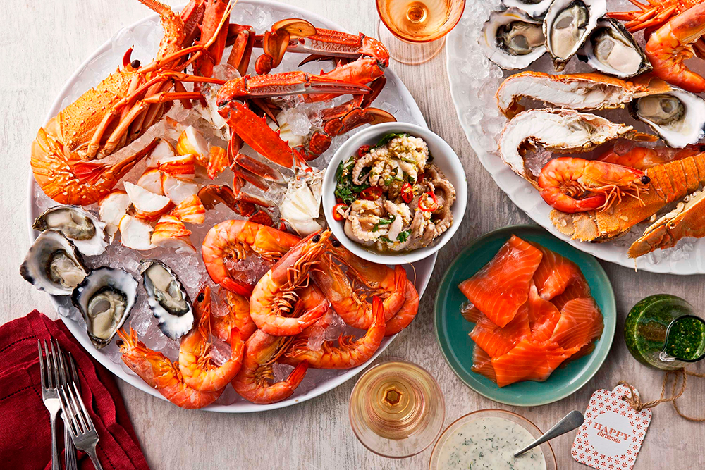
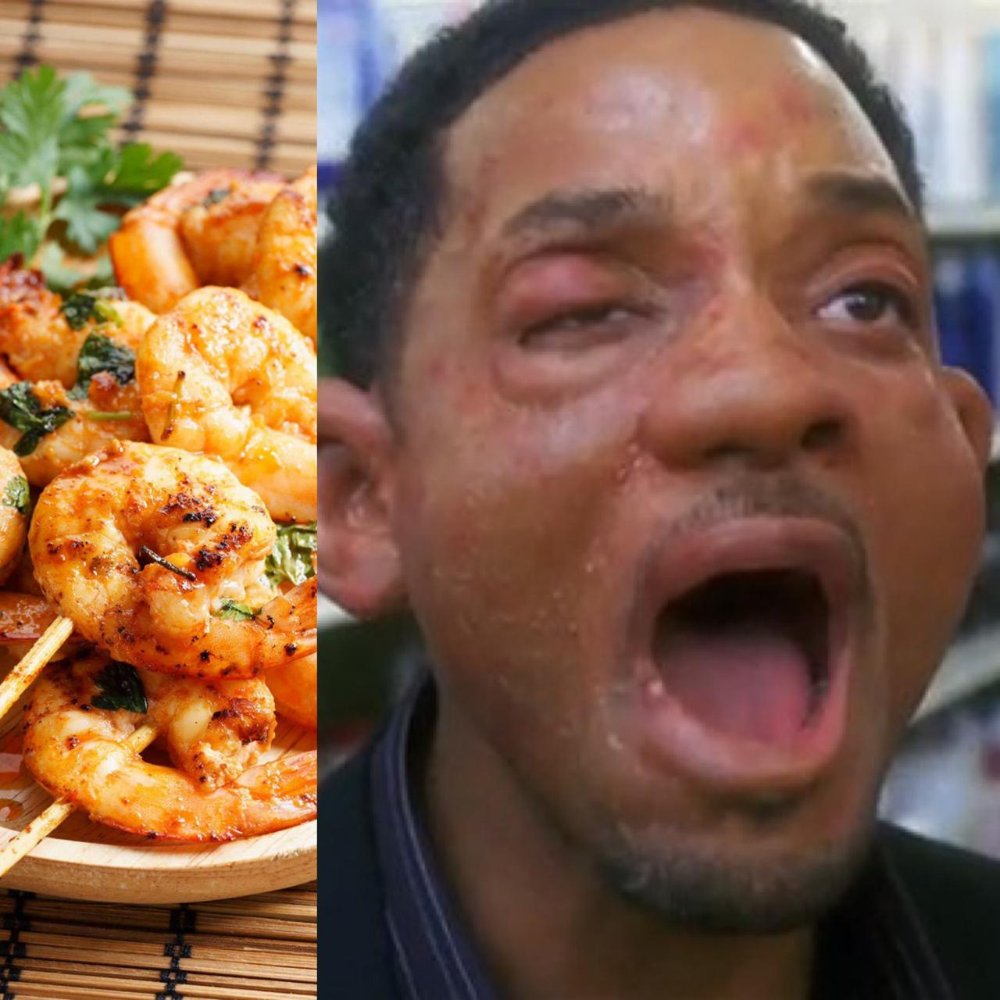
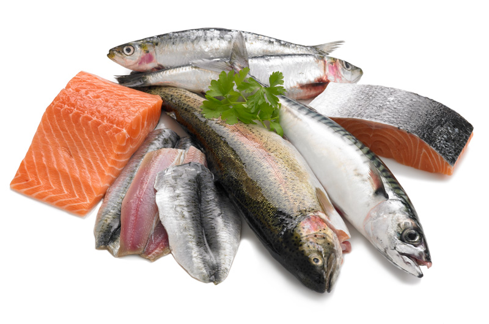

| Menu: | Frutos do Mar | Peixes | Espécimes | Algumas Verdade | Avaliação de Pratos | Veja mais |
|---|

Aversão a frutos do mar é uma condição comum em que as pessoas têm uma forte repulsa ou desconforto em relação a alimentos como peixes, camarões, lagostas, caranguejos e moluscos. Essa aversão pode ser causada por uma variedade de fatores, incluindo experiências negativas passadas, sensibilidade a odores ou sabores específicos, ou até mesmo uma reação alérgica. Embora os frutos do mar sejam uma fonte rica de proteína e nutrientes, a aversão a esses alimentos pode limitar a variedade na dieta de uma pessoa. Felizmente, existem muitas outras opções de alimentos ricos em proteínas e nutrientes que podem ser incluídos em uma dieta saudável. Se você tem aversão a frutos do mar, é importante conversar com um nutricionista ou profissional de saúde para garantir que você esteja recebendo todos os nutrientes necessários em sua dieta. E lembre-se, tudo bem não gostar de certos alimentos - há muitas outras opções saudáveis e deliciosas disponíveis.

Algumas pessoas não gostam de frutos do mar devido ao sabor estranho e odor forte que muitos desses alimentos possuem. Isso pode ser especialmente verdadeiro para aqueles que não cresceram comendo frutos do mar ou que nunca foram expostos a eles em sua infância. O sabor dos frutos do mar pode ser bastante distinto e pode levar algum tempo para se acostumar. Algumas pessoas podem descrevê-lo como salgado, terroso ou ligeiramente amargo. O odor, por sua vez, pode variar dependendo do tipo de fruto do mar, mas muitos têm um cheiro forte e característico que pode ser bastante desagradável para algumas pessoas. É importante lembrar que o gosto é algo subjetivo e que nem todos têm os mesmos gostos e preferências. Se você não gosta de frutos do mar, não há problema em não comê-los.

Apesar dos peixes não se enquadrarem propriamente como frutos do mar, eles se encontram de mãos dadas com os demais animais dessa categoria. Odiar comer peixe pode ser uma preferência pessoal ou uma aversão a determinados sabores ou texturas. Algumas pessoas não gostam do sabor forte ou salgado de certos tipos de peixe, enquanto outras podem não suportar a textura escamosa ou oleosa, no meu caso o conjunto da obra é todo péssimo. Embora o peixe seja uma excelente fonte de proteína e nutrientes, é impossível apreciar seu sabor. No entanto, é importante lembrar que existem muitas outras opções saudáveis de alimentos muito incrivelmente mais saborosos que podem facilmente ser colocados no lugar de um peixe.
Abaixo estão listadas algumas verdades entaladas que precisam ser ditas
*Trecho retirado da matéria "12 verdades inconvenientes que quem odeia frutos do mar precisa dizer" presente no site buzzfeed.com.br.
Veja mais em
BuzzFeed
| Prato | Nível de gore 🤮 |
|---|---|
| Sushi | 🤮🤮🤮 |
| Temaki | 🤮🤮🤮🤮 |
| Caldo de Camarão | 🤮🤮🤮🤮 |
| Moqueca | 🤮🤮🤮🤮🤮 |
| Risoto de Polvo | 🤮🤮🤮🤮 |
| Ostras | 🤮🤮🤮🤮🤮 |
| Bolinho de Bacalhau | 🤮🤮 |
DISCLAIMER: o ódio proferido nesta página refere-se somente a preparação de pratos culinários com essas espécimes e não aos pobre animaizinhos em si. Deixem eles quietinhos em seu habitat natural.